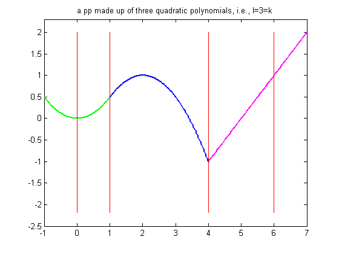
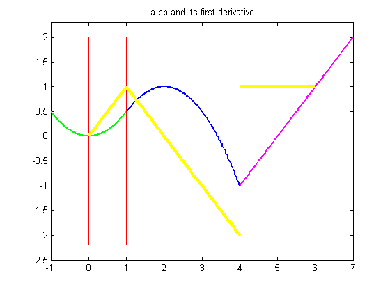
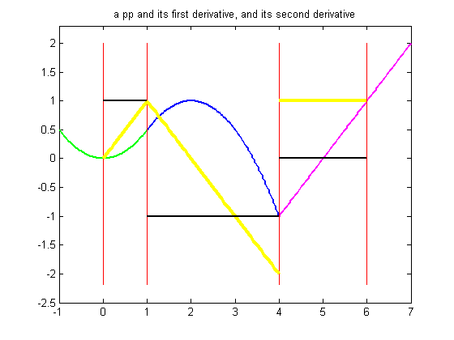
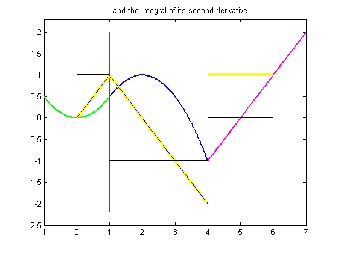
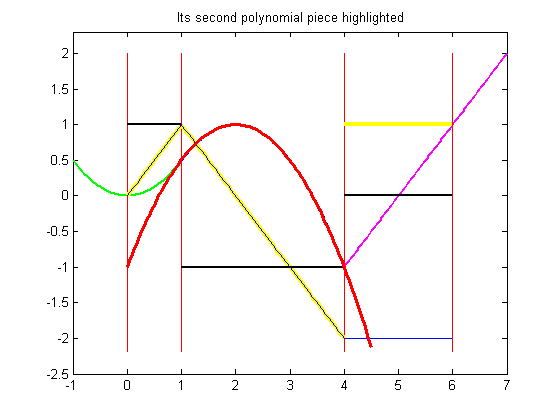
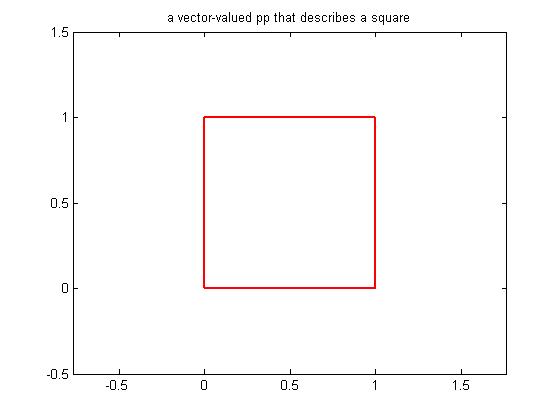
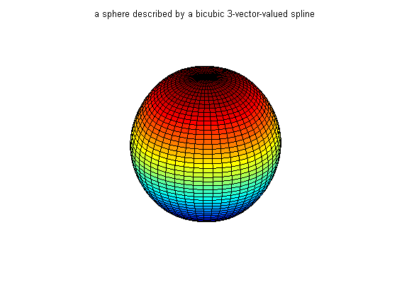

Intro to PPFORM
This is a quick introduction to the PPFORM of a spline and some of its uses.
Copyright 1987-2003 C. de Boor and The MathWorks, Inc. $Revision: 1.20 $ $Date: 2003/02/13 23:14:50 $
A (univariate) piecewise polynomial, or pp for short, is characterized by its b r e a k s e q u e n c e , BREAKS say, and its c o e f f i c i e n t a r r a y , COEFS say, of the local power form of its polynomial pieces. The break sequence is assumed to be strictly increasing, BREAKS(1) < BREAKS(2) < ... < BREAKS(l+1), with L the number of polynomial pieces which make up the pp. In the above picture, BREAKS is [0,1,4,6], hence L is 3.
While these polynomials may be of varying degrees, they are all recorded as polynomials of the same o r d e r K , i.e., the coefficient array coefs is of size [L,K] , with COEFS(j,:) containing the K coefficients in the local power form for the j-th polynomial piece.
Here are the commands that generate the above picture:
sp = spmak([0 1 4 4 6],[2 -1]); pp = sp2pp(sp); breaks = fnbrk(pp,'b'); coefs = fnbrk(pp,'c'); coefs(3,[1 2]) = [0 1]; pp = ppmak(breaks,coefs,1); fnplt(pp,[breaks(1)-1 breaks(2)],'g',1.8) hold on fnplt(pp, breaks([2 3]),'b',1.8) fnplt(pp,[breaks(3),breaks(4)+1],'m',1.8) lp1 = length(breaks); xb = repmat(breaks,3,1); yb = repmat([2;-2.2;NaN],1,lp1); plot(xb(:),yb(:),'r') title('a pp made up of three quadratic polynomials, i.e., l=3=k') axis([-1 7 -2.5 2.3]) hold off
With this, the precise description of our pp in terms of the break sequence BREAKS and the coefficient array COEFS is
pp(t) = polyval( coefs(j,:), t-breaks(j) ) for breaks(j) <= t < breaks(j+1)
where, to recall,
polyval(a,x) equals a(1)*x^(k-1) + a(2)*x^(k-2) + ... + a(k)*x^0 .
In the above picture, BREAKS(1) is 0, and COEFS(1,:) equals [-1/2 0 0], while BREAKS(3) is 4, and COEFS(3,:) equals [ 0 1 -1] . For t not in [BREAKS(1) .. BREAKS(l+1)), pp(t) is defined by extending the first, resp. last, polynomial piece.
A pp is usually constructed through a process of interpolation or approximation. But it is also possible to make one up in ppform from scratch, using PPMAK( BREAKS, COEFS ). E.g., the above pp can be obtained by the statement
fn = ppmak( [0 1 4 6], [1/2 0 0 -1/2 1 1/2 0 1 -1] );
This stores, in FN, a complete description of this pp function in the so-called ppform .
Various M-files in the toolbox can operate on this form. The next slides show some examples.
fn = ppmak( [0 1 4 6], [1/2 0 0 -1/2 1 1/2 0 1 -1] );
Evaluation:
fnval( fn , -1:7 )
ans =
Columns 1 through 7
0.5000 0 0.5000 1.0000 0.5000 -1.0000 0
Columns 8 through 9
1.0000 2.0000
Differentiation: Note that the derivative is continuous at 1 but discontinuous at 4 . Also note that, by default, FNPLT plots a ppform on its b a s i c i n t e r v a l , i.e., on the interval [ BREAKS(1) .. BREAKS(end) ] .
hold on dfn = fnder ( fn ); fnplt( dfn , 'jumps','y', 3) title(' a pp and its first derivative') hold off
Differentiation (continued):
ddfn = fnder( fn, 2 ); fnplt( ddfn , 'j', 'k', 1.6)
The second derivative (shown here in black) is piecewise constant.
Note that differentiation via FNDER is done separately for each polynomial piece. E.g., although the first derivative (yellow) has a jump discontinuity across 4 , the second derivative is not infinite there. This has consequences when we integrate the second derivative, on the next slide.
hold on ddfn = fnder( fn, 2 ); fnplt( ddfn ,'j', 'k', 1.6) title('a pp and its first derivative, and its second derivative') hold off
Integration:
iddfn = fnint( ddfn ); fnplt( iddfn, 'c', .5)
Note that integration of the second derivative does recover the first derivative, -- except for the jump across 4 which cannot be recovered since the integral of any pp function is continuous.
hold on
iddfn = fnint( ddfn );
fnplt( iddfn, .5)
title(' ... and the integral of its second derivative')
hold offParts of a ppform can be obtained with the aid of FNBRK. For example
breaks = fnbrk( fn, 'break' )
recovers the break sequence of the pp in FN, while
piece2 = fnbrk( fn, 2);
recovers the second polynomial piece, as this plot confirms:
fnplt( piece2, 'r', 2.5, breaks([2 3])+[-1 .5] )
hold on breaks = fnbrk( fn, 'breaks' ) piece2 = fnbrk( fn, 2); fnplt( piece2, 'r', 2.5, breaks([2 3])+[-1 .5] ) title(' Its second polynomial piece highlighted') hold off
breaks =
0 1 4 6
A pp can also be vector-valued, to describe a curve, in 2-space or 3-space. In that case, each local polynomial coefficient is a vector rather than a number, but nothing else about the ppform changes. There is one additional part of the ppform to record this, the d i m e n s i o n (of its target).
For example, here is a 2-vector-valued pp describing the unit square, as its plot shows. It is a 2D-curve, hence its dimension is 2.
square = ppmak( 0:4, [ 1 0 0 1 -1 1 0 0 ; 0 0 1 0 0 1 -1 1 ] ); fnplt(square,'r',2) axis([-.5 1.5 -.5 1.5]) axis equal title('a vector-valued pp that describes a square')
A pp in this toolbox can also be multivariate, namely a tensor product of univariate pp functions. The ppform of such a multivariate pp is only slightly more complicated, with BREAKS now a cell-array containing the break sequences for each variable, and COEFS now a multidimensional array. It is much harder to make up a non-random such function from scratch, so I won't try that here, particularly since the toolbox is meant to help with the construction of pp functions from some conditions about them. E.g., the sphere above is constructed with the aid of CSAPE, and then displayed by FNPLT.
x = 0:4; y=-2:2;
s2 = 1/sqrt(2);
clear v
v(3,:,:) = [0 1 s2 0 -s2 -1 0].'*[1 1 1 1 1];
v(2,:,:) = [1 0 s2 1 s2 0 -1].'*[0 1 0 -1 0];
v(1,:,:) = [1 0 s2 1 s2 0 -1].'*[1 0 -1 0 1];
sph = csape({x,y},v,{'clamped','periodic'});
fnplt(sph)
axis equal
axis off
title('a sphere described by a bicubic 3-vector-valued spline')While the PPFORM of a pp is efficient for EVALUATION, the CONSTRUCTION of a pp from some data is usually more efficiently handled by determining first its B-FORM , i.e., its representation as a linear combination of B-splines.
For this, look at SPALLDEM, the demonstration about the B-form.